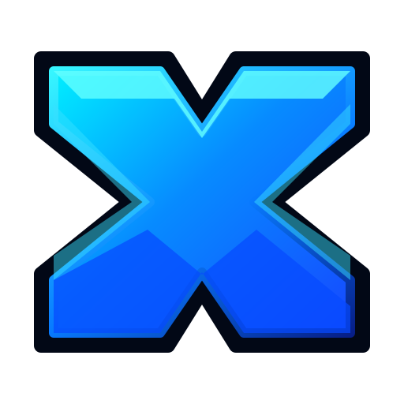

Skupienie na grze
Przejrzysty interfejs nie odciąga uwagi i pozwala skupić się na tym, co najważniejsze.

xaxaclientTWÓJ NOWY SPOSÓB NA MINECRAFTA
Lekki, przejrzysty i dopracowany client stworzony po to, aby oddać Ci pełną kontrolę nad grą.
PO CO XAXACLIENT
Skup się na przygodzie. Reszta ma po prostu działać.
Przejrzysty interfejs nie odciąga uwagi i pozwala skupić się na tym, co najważniejsze.
Wszystko pod ręką — bez błądzenia po skomplikowanych menu i zbędnych ustawień.
Wyrazisty, niebieski wygląd zaprojektowany z myślą o Twojej rozgrywce.
TWOJA PRZYGODA ZACZYNA SIĘ TUTAJ
Pobierz XaxaClient i ruszaj po swoje kolejne wspomnienia.